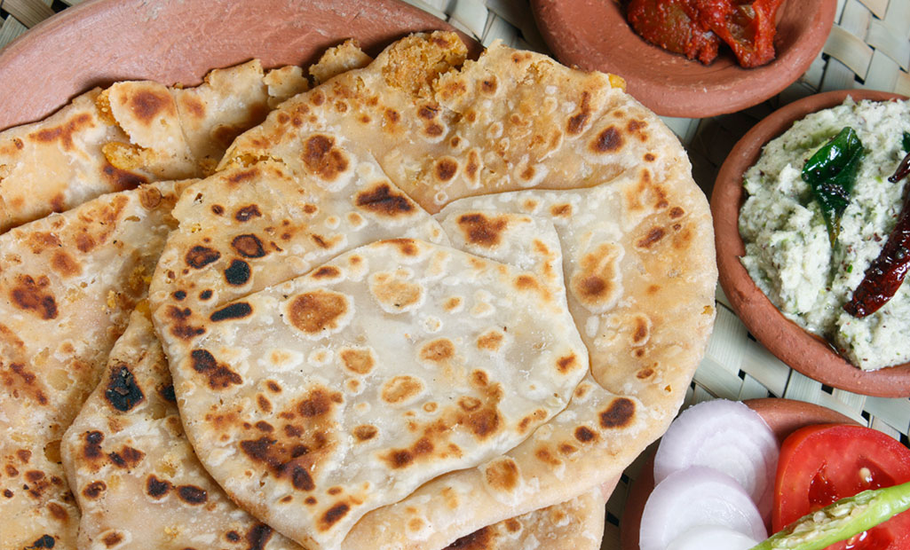

|
|
Home | About | Reviews | Articles | Contact |
| Delhi officially the National Capital Territory (NCT) of Delhi, is a city and a union territory of India containing New Delhi, the capital of India.[18][19] Straddling the Yamuna river, primarily its western or right bank, Delhi shares borders with the state of Uttar Pradesh in the east and with the state of Haryana in the remaining directions. The NCT covers an area of 1,484 square kilometres (573 sq mi). According to the 2011 census, Delhi's city proper population was over 11 million, while the NCT's population was about 16.8 million. Delhi's urban agglomeration, which includes the satellite cities of Ghaziabad, Faridabad, Gurgaon and Noida in an area known as the National Capital Region (NCR), has an estimated population of over 28 million, making it the largest metropolitan area in India and the second-largest in the world (after Tokyo). |
 |
Delhi is home to the second highest number of billionaires and millionaires of any city in India.[22] Delhi ranks fifth among the Indian states and union territories in human development index.[15] Delhi has the second-highest GDP per capita in India (after Goa).[10] Although a union territory, the political administration of the NCT of Delhi today more closely resembles that of a state of India, with its own legislature, high court and an executive council of ministers headed by a Chief Minister. New Delhi is jointly administered by the federal government of India and the local government of Delhi, and serves as the capital of the nation as well as the NCT of Delhi. Delhi is also the centre of the National Capital Region, which is a 'interstate regional planning' area created in 1985.[23][24] Delhi hosted the inaugural 1951 Asian Games, 1982 Asian Games, 1983 NAM Summit, 2010 Men's Hockey World Cup, 2010 Commonwealth Games, 2012 BRICS Summit and was one of the major host cities of the 2011 Cricket World Cup. |
|
Content: Culture & Tradition Best Places To Explore Live .Love .Eat Best Things To Do |

| Delhi Culture is all about the tradition of Delhi. Culture of Delhi includes festivals, art, paintings, embroidery, jewelery, handicrafts, cuisine, religion and sports. Delhi, being the capital of India, is the land of festivals and celebrations. The most important festivals included in the Cultural Heritage of Delhi are the Diwali, Dussera, Lohri, Holi, Kite Flying Festival, Basant Panchami, Maha Shivaratri, Baisakhi, Mahavir Jayanti and a lot more. Delhi Culture comprises of art and paintings, which is a part of the tradition of Delhi.art and paintings got immense importance in Delhi since the Mughal period. Delhi embroidery is famous all over the world. The cloths having different types of embroideries are used or making salwar kurtas, sarees, bed sheets and a lot more. The fine work incorporated in the jeweleries of Delhi bring represent the touch of elegance. The jeweleries include the traditional as well as the modern ones. |  |

| 1. Akshardham Temple | |
| Dedicated to Bhagwan Swaminarayan, Akshardham Temple exhibits the ancient culture of India. The temple complex maintains a step-well styled courtyard and 60 acres of lush lawns featuring the bronze statues of Indian heroes, including patriots and warriors. Registered as the World’s largest comprehensive Hindu temple in the Guinness World Record, the temple is an architectural marvel built from intricately carved sandstone and marble. Furthermore, the temple organizes exhibitions on Swaminarayan’s life teachings and also organises a musical fountain and light show after sunset every day. |  |
| 2. Red Fort | |
| Constructed in 1639 by the Mughals, Red Fort gets its name from its massive red-coloured sandstone walls. Set in Old Delhi, the octagonal-shaped fort is spread over an area of 254 acres. The planning and designing of the fort is a fusion of Mughal, Persian, Hindu, and Timurid traditions. A strong influence on later structures built in and around Delhi, Red Fort also features a museum that holds Mughal-era artefacts, including daggers, curtains, miniature paintings and carpets. The highlights of this architectural creativity include the peacock throne, step well, imperial bath, Moti Masjid and Hira Mahal. |  |
| 3. India Gate | |
| India Gate symbolises the sacrifice of 70,000 Indian soldiers who lost their lives battling against the foreign army during the World War I. Designed by Edwin Lutyens, it features the undying Amar Jawan Jyoti or the Flame of the Immortal Soldier which was added later to honour Indian martyred soldiers in the Indo-Pak War. Furthermore, this beautiful masterpiece is counted amongst the largest war memorials in India. Standing on a Bharatpur stone base, the structure is surrounded by lush lawns making it a popular picnic spot during winter afternoons and summer evenings. Lit at night, the monument looks magnificent with colourful fountains in the in the vicinity. |  |
| 4. Hauz Khas | |
| If you are a party animal, then definitely head to Hauz Khas, which is popular for its swanky clubs, quirky cafes, and fine-dine restaurants. Earlier known as Hauz-e-Alai, this affluent neighbourhood in South Delhi holds a historical importance with remnants of Mughal architecture. The place is popular for a 13-century structure, Hauz Khas Complex, which retains the old charm amidst the modernised street. Besides raving it up at urban village in Delhi, we suggest you take delight in the greenery of Deer Park, splurge at designer label boutiques and admire the fine artwork at various art galleries. |  |
| 5. Qutub Minar | |
| The Qutub Minar, also spelled as Qutb Minar and Qutab Minar, is a minaret and "victory tower" that forms part of the Qutb complex, which lies at the site of Delhi’s oldest fortified city, Lal Kot, founded by the Tomar Rajputs. It is a UNESCO World Heritage Site in the Mehrauli area of South Delhi, India. Qutub Minar is a 73-metre tall minaret, named after Qutb-ud-din Aibak. The tower contains 5 distinct tapering storeys, wherein first 3 storeys of this masterpiece are adorned with red sandstone, while the fourth and fifth storeys are constructed in marble and sandstone respectively, engraved with decorative Quranic texts. Interestingly, the tower has a spiral staircase with 379 steps, and has a mosque named ‘Quwwat-ul-Islam Masjid’ at the foot of the tower, which is the first mosque in India. |  |

| 1. Paranthas | |
| From being the perfect start to a “healthy” morning in most Delhi households, to a meal for hungry college students and even a late-night snack, paranthas are definitely on the top of the list when it comes to my favorite food in Delhi. Choose from a plain one or select a stuffing of your choice - potatoes, cauliflower, radish, eggs, keema, bananas or even last night’s left over dal - the options are galore. Where can I try this dish? Paranthe Wali Gali in Chandni Chowk, whose past customers include the likes of Maharajah of Kashmir and even Prime Minister Nehru and his family; Moolchand Parathe Wala located in South Delhi was SRK’s favorite when he used to live in Delhi. |  |
| 2. Butter Chicken | |
| Here’s an interesting story about the origin of one of the most gratifying dishes on this planet. It originated in the 1950s in Moti Mahal Restaurant, Daryaganj, a neighbourhood skirting the Walled City. Known for its Tandoori Chicken, the cooks there accidentally tossed the sauce consisting of butter, tomato and chicken juices with tandoori chicken pieces; the rest is history. Today, this dish can be found in almost every non-vegetarian restaurant and highway dhabas and is best enjoyed with rice or naan. |  |
| 3. Kebabs | |
| Kebab is a cooked meat dish, with its origins in Middle Eastern cuisines. Many variants are popular around the world. Kebabs consist of cut up or ground meat, sometimes with vegetables, and various other accompaniments according to the specific recipe.Whoever thought grilled chunks of meat or fish marinated in aromatic Indian spices couldn’t give you joy should think again. While we Delhiites have a lot to be thankful for to the Mughals, Kebabs are one of them. Whether it is Kebabs being delivered to your car, a quintessentially Delhi experience, to food stalls and fine dining restaurants across the city, try this popular dish and you will be hooked forever. |  |
| 4. Chole Bhature | |
| Chole bhature is a food dish popular in the Northern areas of the Indian subcontinent. It is a combination of chana masala and bhatura/puri, a fried bread made from maida. Here’s a piece of advice: This dish is best enjoyed on an empty stomach. Rich, spicy and heavy, this is one of the most popular Punjabi dishes and is definitely on my list of top 10 must-try dishes in Delhi. Don’t be surprised if you find it on the breakfast menu of restaurants across the capital. You can find this lip smacking dish at all food joints, be it local joints or restaurants, given its popularity with delhiites. It is generally accompanied with Lassi. | |
| 5. Momos | |
| This one bags the prize for being one of the most popular snacks, be it in office complexes, birthdays or even cocktail parties. It is not uncommon to find vendors outside almost every office building, housing area and market place selling Momos. These tasty dumplings are available in both vegetarian and non-vegetarian options and are enjoyed with the fiery-red sauce. Momo was initially a Newari food in the Kathmandu valley. It was later introduced to Tibet, China and as far away as Japan by a Nepalese princess who was married to a Tibetan king in the late fifteenth century. |  |
| 1. Find Inner Peace at Lotus Temple | |
| Lotus Temple is an architectural delight. The whole complex from top to bottom is made of pure marble.The universal symbol of peace, a lotus flower, gives the temple not only its name but shape as well.Photography is restricted in the inner sanctum and there is a strict code of silence to be maintained at all times. Open to all castes and creeds, the temple is an ideal place for anyone who wishes to meditate and pray. The temple is also known as the place of Baha’i faith. | 
|
| 2. Snow World | |
| Located inside DLF Mall of India, Noida, Snow World is Asia’s largest indoor snow park featuring ice skating & sledding. With an area of 6,000 square meters, it is a themed real snow-filled wonderland. Offering mesmerizing interiors and unmatchable scope of activities, the park maintains a minus 10 degrees of chilly weather. Moreover, this family entertainment spot has Ski-Slides, Icy Luge (ride) and multi coaster (Toboggan). It is one of the best Snow parks near Delhi that offers a unique experience of Skiing to all its guests. Ski India is also known as Snow World, and it is located at Mall of India in the Delhi NCR region. There are lots of selfie points in Snow World, and one of the best parts is, it consists of an artificial igloo where you can also star-gaze. It is one of the best Snow parks near Delhi that offers a unique experience of Skiing to all its guests. Ski India is also known as Snow World, and it is located at Malof India in the Delhi NCR region. There are lots of selfie points in Snow World, and one of the best parts is, it consists of an artificial igloo where you can also star-gaze. |  |
| 3. Appu Ghar | |
| A rainforest-themed water park, Appu Ghar Water Park is bringing back the old charm with its newly launched Oyesters Water Park. Spread over an area of 10 acres, it offers 16 innovative rides like Sky Fall, Whirl Wind, and Rapid Racers, including India’s tallest 93 feet slide and first free fall ride. Additionally, the park maintains banquet facilities for up to 3,500 guests, and has an amazing food court offering refreshing mocktails and mesmerizing dining options. Appu Ghar was an amusement park operated by International Amusement Limited, located in Pragati Maidan, New Delhi, India. It was spread over 15.5 acres of land and was India's first amusement park. | |
| 4. National Rail Museum | |
| The National Rail Museum in Chanakyapuri, New Delhi, displays exhibits on the history of rail transport in India. The museum was inaugurated on 1 February 1977. First of its kind in India, Delhi’s National Rail Museum houses the largest collection of life-size railway exhibits including locomotives, coaches and simulators collected from different princely states of the country. The indoor galleries within this 11-acre museum also preserve documents, drawings, books, maps and other items that take you on a journey through over 160 years of Indian Railway. Toy Train 1:8, 3D Virtual Coach Ride, Joy Train and PSMT Ride are the major attractions at this museum. |  |
| 5. Waste to Wonder Park | |
| Located in Rajiv Gandhi Smriti Van, Waste to Wonder Park is a one-of-a-kind theme park in the capital city of India. It is spread over an area of 5 acres and known for featuring eye-catching replicas of the Seven Wonders of the World amidst lush green surroundings. One thing that distinguishes the park from other attractions around the city is that all structures here are created using industrial and automobile waste. What’s more, South Delhi Municipal Corporation (SDMC) has made use of solar and wind energy to light up the monuments post-sunset. From admiring the beauty of the monuments and taking photos to relaxing on the benches and enjoying a picnic, there are many amazing things you can do here. | |